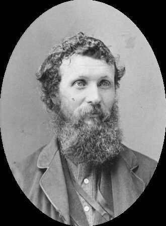

In March 1868 a thirty-year-old Scot landed in San Francisco, asked a passer-by for the quickest way out of the city, and set off east on foot toward a wall of mountains he had never seen.

John Muir came to America from Scotland as an eleven-year-old farm boy in 1849 and grew into the most persuasive voice for keeping wild country wild. He helped win Yosemite its national park, founded the Sierra Club, and took a president camping among the giant sequoias.
The document behind this story
Our National Parks — John Muir, 1901.
This is the book that brought a president to Yosemite. Its opening lines are the plainest statement Muir ever wrote of why wild country was worth a nation's trouble.
Thousands of tired, nerve-shaken, over-civilized people are beginning to find out that going to the mountains is going home; that wildness is a necessity; and that mountain parks and reservations are useful not only as fountains of timber and irrigating rivers, but as fountains of life.
“When we try to pick out anything by itself, we find it hitched to everything else in the universe.”John Muir, My First Summer in the Sierra (1911), chapter 6 (item 7).
John Muir was born in Dunbar, Scotland, on 21 April 1838, and attended the local schools until he was eleven. In 1849 his family emigrated to the United States and settled on Wisconsin farmland — first at Fountain Lake, then at Hickory Hill Farm near Portage. His father worked the children from dawn to dusk, and the boy rose before first light to read and to build things: wooden clocks, thermometers, and a bed rigged to tip him onto his feet at a set hour.
In 1860 he carried his inventions to the state fair in Madison, won prizes and notice, and entered the University of Wisconsin. He left after about three years without a degree, having fallen for botany and geology, and wandered the northern states and Canada doing odd jobs along the way.
In 1867, working in a carriage shop in Indianapolis, a file slipped and blinded him in one eye; the other went dark in sympathy, and he lay in a shuttered room for weeks. When his sight came back he resolved to give up machinery and devote himself to the natural world, and set out to walk roughly a thousand miles from Indianapolis to the Gulf of Mexico.
In 1868 he sailed by way of Cuba and Panama, crossed the isthmus, and came up the coast to San Francisco in March. He walked out across the San Joaquin Valley and up into the Sierra Nevada, which he named "the Range of Light." He herded sheep that first summer and made his home in Yosemite.
For years Muir read the Sierra's glaciers, meadows and storms at first hand, and in 1874 his "Studies in the Sierra" began a long career as a writer who could make a reader feel a landscape they had never seen. In 1880 he married Louie Strentzel, settled in Martinez, California, raised two daughters, and ran the family fruit ranch.
Writing, for Muir, was a way of defending what he loved. He had watched sheep — "hoofed locusts," he called them — and loggers strip the high meadows and forests, and he turned his pen on the people doing it.
In 1890, after a campaign Muir fought alongside the editor Robert Underwood Johnson, an act of Congress created Yosemite National Park; the National Park Service dates it precisely to 1 October 1890. Two years later Muir and a circle of allies founded the Sierra Club "to do something for wildness and make the mountains glad." He was its first president and held the office until his death.
His 1901 book Our National Parks caught the attention of President Theodore Roosevelt, who came west in 1903 to see Yosemite with Muir himself. The two slipped away from the official party into the back country for several days; Roosevelt went home and threw the weight of the presidency behind protecting the nation's forests, parks and monuments.
A museum should get the dates right, and this story is often told loosely. Yosemite became a national park in 1890. The Grand Canyon, which Muir loved and defended, was proclaimed a national monument in 1908 and became a national park only in 1919 — five years after Muir had died, so he cannot have established the park itself. Muir died in a Los Angeles hospital in 1914, soon after losing his last great fight: the effort to save the Hetch Hetchy Valley from a dam, which Congress approved in 1913. We do not assert a date for his American naturalisation; no record we opened states one, and we would rather leave the gap visible than invent a number.
Every fact on this page comes from one of these 8 items. Each links to the institution that holds it and gives that institution’s own rights wording.
The anchor: the naturalist about the time his Sierra writing was making him known.
Rights, in the institution’s words: Commons record labels this image: Public domain.
reference entry
Chronology source: born Dunbar 1838; family emigrated to Wisconsin in 1849 (Fountain Lake, then Hickory Hill); University of Wisconsin from 1860; 1867 eye injury and thousand-mile walk; landed San Francisco March 1868; 1874 writing career; married Louie Strentzel 1880; Sierra Club 1892; Our National Parks 1901; Roosevelt's 1903 visit; Hetch Hetchy lost 1913; died 1914.
Rights, in the institution’s words: (not checked; cited only)
reference entry
The National Park Service dates Yosemite precisely: “Established as a national park on October 1, 1890.”
Rights, in the institution’s words: (U.S. government work; cited only)
reference entry
The 1903 trip: Roosevelt came to Yosemite to see it with Muir, and the days they spent together in the back country helped shape his conservation program.
Rights, in the institution’s words: (U.S. government work; cited only)
reference entry
“The Sierra Club was organized in 1892”; Muir was its first president and held the office for twenty-two years, until his death.
Rights, in the institution’s words: (not checked; cited only)
book
The 1901 book that drew Theodore Roosevelt’s attention. The spotlight excerpt is from the opening of chapter 1, “The Wild Parks and Forest Reservations of the West.”
Rights, in the institution’s words: Public domain (first published 1901).
book
Source of the quotation above, from Muir’s journal of his first Sierra summer.
Rights, in the institution’s words: Public domain (first published 1911).
reference entry
Grand Canyon was proclaimed a national monument on 11 January 1908 and became a national park in 1919 — five years after Muir’s death.
Rights, in the institution’s words: (U.S. government work; cited only)